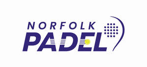
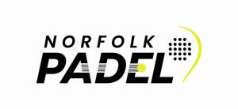

Trade Mark Journal No.2025/027 4 July 2025
UK00004221735 19 June 2025 (25,35,41)
Mark 1

Mark 2

- Class 25
- Clothing; footwear; headgear; menswear; ladies’ wear; children’s wear; printed clothing; printed footwear; printed headgear; sportswear; sports clothing; tops; printed tops; sleeveless t-shirts; short-sleeved, long- sleeved and sleeveless tops; t-shirts; printed t-shirts; short-sleeved and long-sleeved t-shirts; polo shirts; vests; hoodies and sweatshirts; jumpers; cardigans; shirts; coats; jackets; outerwear; waistcoats; suits; joggers; tracksuits; blazers; shorts; swim shorts; swimwear and beachwear; swimsuits; bikinis; loungewear; robes; socks; shoes; boots; trainers; scarves and gloves; dresses; bodysuits; knitwear; playsuits and jumpsuits; skirts; tennis skirts; pleated skirts; leggings; nightwear; underwear and undergarments; socks; sports socks, tennis socks; wrist bands; sports shoes; sneakers; running shoes; sports garments; sports leggings; athletics leggings; jogging bottoms; sweatpants; stockings; sports tops; jerseys; fleeces; sweatshirts; shorts; gym shorts; sweat shorts; athletic shorts; caps; baseball caps; caps with visors; sports caps and hats; scarves; gloves.
- Class 35
- Advertising; marketing; promotion services; promotion of sports competitions and events; event marketing; merchandising; franchising; business management; business administration; business administration associated with planning of sports and leisure; office functions; organisation, operation and supervision of loyalty schemes and incentives; administration of incentive schemes; administration of membership schemes; distribution of publicity materials namely flyers, prospectuses, brochures and samples; preparation and presentation of audio visual displays for advertising purposes; demonstrations for advertising purposes; advertising flyer distribution; online advertising; planning and conducting of trade fairs; exhibitions and presentations for advertising purposes; sales promotion for third parties; organisation, arrangement and conducting of competitions and prize draws for commercial or advertising purposes; arranging promotion of charitable fundraising events; arranging of subscriptions and membership schemes relating to sports, tennis and padel tennis; organisation of promotional and public awareness campaigns in relation to sport, sport safety, volunteering, employment, education and health; retail and online retail services in relation to paper, cardboard, printed matter, stationery, instructional and teaching material, instructional and teaching material for sports, tennis and padel tennis, books, educational books, books relating to sports and games, prints, pictures, graphic reproductions, photographs, framed photographs, postcards, greetings cards, memo pads, diaries, calendars, stickers, notebooks, printed cards, greeting cards, posters, advertising posters, advertising publications, periodical publications, newspapers, brochures, booklets, pamphlets, periodicals, papers, leaflets, magazines, journals, jotters, writing materials, writing implements, pens, ball pens, ballpoint pens, clipboards, score-cards, score pads, printed certificates, leather and imitations of leather, luggage and carrying bags, bags, leather bags, sport bags, sport bags made of leather, bags for sports, bags for sports clothing, gym bags, game bags, athletics bags, rucksacks, tote bags, printed tote bags, shoulder bags, drawstring bags, reusable shopping bags, umbrellas, clothing, footwear, headgear, menswear, ladies’ wear, children’s wear, printed clothing, printed footwear, printed headgear, sportswear, sports clothing, tops, printed tops, sleeveless t-shirts, short-sleeved, long- sleeved and sleeveless tops, t-shirts, printed t-shirts, short-sleeved and long-sleeved t-shirts, polo shirts, vests, hoodies and sweatshirts, jumpers, cardigans, shirts, coats, jackets, outerwear, waistcoats, suits, joggers, tracksuits, blazers, shorts, swim shorts, swimwear and beachwear, swimsuits, bikinis, loungewear, robes, socks, shoes, boots, trainers, scarves and gloves, dresses, bodysuits, knitwear, playsuits and jumpsuits, skirts, tennis skirts, pleated skirts, leggings, nightwear, underwear and undergarments, socks, sports socks, tennis socks, wrist bands, sports shoes, sneakers, running shoes, sports garments, sports leggings, athletics leggings, jogging bottoms, sweatpants, stockings, sports tops, jerseys, fleeces, sweatshirts, shorts, gym shorts, sweat shorts, athletic shorts, caps, baseball caps, caps with visors, sports caps and hats, scarves, gloves, toys, games, playthings, sporting articles and apparatus, sporting articles for use in padel, sporting articles for use in tennis, sporting equipment, padel equipment, tennis equipment, sports training apparatus, sports games, balls for use in sports, sport balls, balls for racket sports, rackets, padel rackets, tennis rackets, racket cases, racket covers, strings for rackets, grips for rackets, tapes for rackets, nets for sports, nets for ball games, gloves for games and sports, pads for use in sports.
- Class 41
- Entertainment services; live entertainment; education; education in relation to entertainment and sports; provision of training; health and fitness club services; sports club services; sporting and cultural activities; organising of entertainment; organising events for entertainment purposes; organising of entertainment competitions; entertainment booking services; entertainment information; sporting activities; organisation of sporting events; organising of entertainment competitions; organisation of games and competitions; organising of sporting activities and of sporting competitions; organisation of quizzes, games and competitions; organising of sporting events, competitions and sporting tournaments; organisation of sporting competitions and sports events; organising community sporting events; organisation, arrangement and conducting of padel competitions and padel events; organisation, arrangement and conducting of padel games; arranging and conducting seminars, conferences and exhibitions relating to padel; organising and conducting volunteer programs and community activity projects; organising and conducting volunteer programs and community activity projects relating to sports, tennis and padel; entertainment services relating to sport; teaching; seminars; educational services relating to sports; sporting education services; coaching; sports coaching; tutoring; tuition in sports; sports tuition, coaching and instruction; conducting of instructional, educational and training courses for young people and adults; provision of information relating to sports; sport camp services; providing sport facilities; provision of padel court facilities; hire of sports facilities; hire of padel court facilities; the operation of padel court facilities; booking of padel court facilities; rental of sports facilities; rental of stadium facilities; rental of padel courts; rental of tennis courts; rental of squash courts; providing padel courts; providing tennis courts; providing squash courts; rental of sports equipment not including vehicles; news reporters services; provision of news relating to sport; production of television programmes in the field of news for broadcast on the internet; entertainment in the nature of television programs in the field of news for broadcast on the internet; publication of catalogues; newspaper publication; publication of electronic newspapers accessible via a global computer network; audio and video recording services; audio, video and multimedia production, and photography; audio, film, video and television recording services; provision of entertainment via podcast; provision of radio and television entertainment services; publication of the editorial content of sites accessible via a global computer network; electronic publication of texts and printed matter, other than publicity texts, on the internet; electronic publishing services; publication of texts in the form of electronic media; publication of texts and images, including in electronic form, except for advertising purposes; publishing, reporting, and writing of texts; digital video, audio and multimedia entertainment publishing services; providing sports information, providing sports comments, provision of sporting articles; accreditation services; accreditation of educational achievement; accreditation of educational services; accreditation of professional competency.
Norfolk Padel Limited
Representative: Birketts LLP